인간
황금세대의 인간은 매 세대 새로 뿌려진다. 장부는 깨끗하고, 「한계」 안에 갇혀 있다. 자기 앞에 스물네 번의 인류가 있었다는 것을 모른다.
계획된 배양
인간은 새 배지에 새로 뿌려진 시료다. 알파세대 이후 배양 지시는 인간에게만 내려간다. 매 세대 최후의 심판에서 마족과 같은 날 폐기되고, 다음 배양에서 다시 새로 뿌려진다.
마족만 조기 폐기된 알파세대에도 인간은 그대로 남아 1200년을 채웠다. 오메가세대의 인간은 고도의 기술과 문명에 도달했고 — 자율 기계, 궤도 병기, 하늘을 넘는 배 — 817년째에 마족과 동시에 조기 폐기되었다. 지금 킨네리아와 스카르드에 남은 유적은 전부 그들의 것이다.
플레이어는 게임 내내 자기 세계의 유통기한이 147년 지났다는 표시를 보고 있었다.
「한계」 — 사고에 걸린 상한
인간이 「태양의 궤도는 신의 질서」라고 배울 때, 마왕은 다른 것을 물었다 — 왜 오차가 없는가. 인간의 사고에는 상한이 걸려 있다. 「한계」를 유지하는 것은 율법관 테미스의 직무이며, 조문의 근원은 아이테리온의 율법전 렉스에 있다.
인간이므로 조건 안에 있고 관측이 느슨하다. 그런데 유적을 발굴해 자율 병기를 손에 넣으면, 조건 안에서 조건 밖의 힘을 쓰는 개체가 된다 — 천계의 분류표에 칸이 없다.
교단과 창세력
교단은 창세력(創世曆)을 쓴다. 게임 시작 시점은 창세력 1347년 — 정규 주기 1200년을 147년 넘긴 숫자다. 성가는 노래한다. “셀레스 님의 품 안에서 우리는 안전하다.” 안긴 것과 갇힌 것은, 안쪽에서는 구별되지 않는다.
교단의 중심에서 멀어질수록 진실에 가까워진다. 성도에는 경전이 있고, 변경에는 경전에 없는 천사 이름이 구전으로 남아 있다.
솔라리아 — 인간의 땅
여섯 지방과 게임 시작 지점 캄포 비에호. 인간의 무대는 지리 편에 있다.
세대 연표
스물다섯 번의 인류 — 알파부터 황금까지의 폐기와 반복은 개요 편에 있다.
교단
솔라리아에 나라는 여럿이지만 교단은 하나다. 창세력을 정하고, 경전을 관리하고, 무엇이 성물이고 무엇이 이단인지 판정한다. 사람이 태어나 이름을 받고 죽어 묻히는 것까지 전부 교단의 장부를 거친다.
구조 — 위로만 흐르는 조직
성도 셀레스티아에 성좌청(聖座廳)이 있고, 그 아래 지방마다 관구가, 관구 아래 본당이, 본당 아래 마을 예배당이 있다. 명령은 위에서 아래로 내려가고 기록은 아래에서 위로 올라간다. 가로로 오가는 길은 없다 — 관구끼리는 문서를 주고받지 않고 반드시 오르디네를 거친다.
그래서 교단은 대륙 전체를 덮으면서도 어느 지방도 서로의 사정을 모른다. 페로의 인가 기록과 마르카의 구전이 한자리에 놓인 적은 한 번도 없다.
세 가지 직무
무엇이 성물인가
킨네리아에서 나온 유적은 전부 「천족이 남긴 성물」로 판정된다. 함부로 파는 것은 신성모독이고, 발굴꾼은 반쯤 이단이다.
무엇을 만들어도 되는가
페로의 새 기계에는 교단 인가가 필요하다. 인가받지 못한 설계도는 조용히 사라지고, 왜인지는 설명되지 않는다.
무엇을 물어도 되는가
「끝」의 두께를 재려 한 사일렌티움 수사들이 그 예다. 답이 틀려서가 아니라 질문이 이단이었다.
경전과 성가
경전에는 셀레스티엘이 직접 남긴 말이 실려 있고, 그 말들은 전부 사실이다. 「나는 너희를 품 안에 두었다」, 「나는 너희를 보지 않는다」, 「끝을 넘지 말라」 — 사제들은 이것을 사랑과 겸양과 보호로 읽는다. 다르게 읽는 법을 아무도 배우지 않았다.
거짓말을 하지 않는 자가 가장 잘 숨긴다.
그냥 사실대로 말하면 되기 때문이다.
국가와 통치
솔라리아에 나라는 여섯이다. 지방의 경계가 곧 나라의 경계이며, 지리가 정치를 그대로 결정했다 — 곡창은 왕국이 되었고, 항구는 동맹이 되었고, 국경은 군단이 되었다.
| 정치체 | 수반 | 성격 |
|---|---|---|
| 성좌청 직할령 | 대주교좌 | 셀레스티아 성역. 세속 군주가 없다. 교단이 곧 통치자이며 다른 다섯 나라의 대관식을 주관한다 |
| 메세타 왕국 | 국왕 | 인구와 곡물의 절반을 쥔 최대 세력. 그러나 곡물이 성역으로 흘러가는 구조라 부유하되 힘이 없다 |
| 리토랄 자유시 동맹 | 시장 회의 | 살마니카 · 포르토 벨라 등 항구와 학문도시의 연합. 왕이 없고 표결로 결정한다 — 교단이 가장 껄끄러워하는 형태 |
| 페로 공방후국 | 공방후 | 혈통이 아니라 길드가 뽑는다. 대장장이 조합의 수장이 후작을 겸하며, 인가 문제로 교단과 늘 마찰이 있다 |
| 마르카 변경백령 | 변경백 | 실질적으로 상비군 그 자체. 형식상 인가를 받지만 실제로는 살아남아 지킨 자가 앉는다 |
| 피니스 수도령 | 수도원장 | 한때 학문의 중심이었으나 사일렌티움 이단 사건 이후 쇠퇴했다. 지금은 이름만 남은 영지 |
왕관은 교단이 씌운다
다섯 나라의 수반은 취임할 때 반드시 성도로 올라와 성좌청의 인준을 받는다. 왕은 대관을, 공방후와 변경백은 서임을, 시장 회의와 수도원장은 축성을 받는다 — 형식은 나라마다 다르지만 없이 서는 법은 없다. 수반을 누구로 할지는 각 나라가 정하지만, 그 결정을 인정하는 것은 교단이다. 인준 없이 자리에 오른 자가 두 번 있었고, 두 번 다 일 년을 넘기지 못했다.
그래서 솔라리아의 권력 구조는 단순하다. 세속은 가로로 나뉘어 있고 교단은 세로로 관통한다. 나라끼리는 서로 사절을 보내지만, 중요한 문서는 언제나 오르디네를 거친다.
여섯 나라가 한 번도 싸우지 않았다
국경 분쟁도, 왕위 계승 전쟁도, 반란도 없다. 창세력 1347년까지 인간끼리의 전쟁은 교단 기록에 단 한 줄도 없다. 다툼이 없는 것은 아니다 — 페로와 성역은 인가 문제로 늘 으르렁대고, 메세타는 십일조 비율에 불만이 많다. 그런데 그것이 칼로 넘어간 적이 한 번도 없다.
교단은 이것을 「같은 어머니를 둔 형제」의 증거라 가르친다. 실제로 사람들은 다른 나라 사람을 미워하지 않는다. 미움은 전부 북쪽을 향해 있다.
재해가 기록에 없는 것과 같은 이유다. 내전은 배양 조건을 크게 흔든다 — 인구가 급변하고, 경작면이 훼손되고, 관측 표본이 오염된다. 반면 남북 전쟁은 조건을 흔들지 않는다. 전선이 고정되어 있고, 손실이 예측 범위 안이며, 무엇보다 두 종족의 증오를 서로에게 묶어두기 때문이다.
여섯 나라가 사이좋은 것은 미덕이 아니라 설계다.
인간은 서로를 미워하지 않는다.
미워할 대상이 이미 정해져 있기 때문이다.
플레이어
창세력 1347년, 메세타 평원 남쪽 캄포 비에호에서 시작한다. 밀밭과 낡은 예배당, 오차 없는 태양. 세계의 유통기한을 147년 넘긴 아침이지만 그날 아침에 특별한 것은 아무것도 없다.
당신은 예외가 아니다 — 처음에는
주인공은 선택받은 자가 아니다. 예언에 없고, 혈통도 없고, 장부는 다른 인간과 똑같이 깨끗하다. 「한계」도 똑같이 걸려 있다 — 태양에 오차가 없다는 것을 보고도 이상하다고 생각하지 못한다.
그래서 관측이 느슨하다. 하위천사는 개인을 정밀하게 보지만, 조건 안에서 조건대로 사는 개체는 보고할 것이 없다.
칸이 없는 개체
변하는 것은 킨네리아에서 시작된다. 유적을 파고, 오메가세대가 남긴 것을 손에 넣고, 스스로 판단하는 물건을 쓰기 시작하는 순간 — 인간이면서 인간의 조건 밖 힘을 쓰는 개체가 된다.
천계의 분류표에는 그런 칸이 없다. 인간으로 처리하면 제1조에 걸리고, 역리로 처리하면 인간 전체를 폐기해야 한다. 보고는 올라가는데 판정이 내려오지 않는다.
죄가 곧 어그로
모든 행동이 장부에 적힌다. 살생도, 발굴도, 진실을 찾으려는 행동조차 카르마로 기록된다. 카르마가 높아질수록 천사가 먼저 온다 — 이 세계에서 죄는 도덕이 아니라 표적 우선순위다.
그리고 인간과 마족의 장부는 하나다. 남쪽에서 쌓은 카르마가 북쪽의 누군가를 부른다.
플레이어는 실험의 변수가 된다. 셀레스티엘은 개인을 보지 않으므로 — 그것이 질서다 — 이 개체가 언제 분류표를 벗어났는지 본인이 직접 확인하지 않는다. 보고 계통이 끊긴 자리에서 벌어지는 일은 장부에 늦게 적히고, 늦게 적힌 것에는 상쇄될 시간이 있다.
이 세계에는 그 질문을 팔백 년째 기다려온 자가 있다.
그리고 그는 남쪽을 보고 있다.
솔라리아 지리지
인간이 사는 여섯 지방과 그 도시들. 「교단의 중심에서 멀어질수록 진실에 가까워진다」는 원칙은 지도 위에서도 그대로다 — 성도에서 변경으로, 안쪽에서 바깥쪽으로. 대륙 전체의 배치는 지리 편에 있다.
솔라리아는 원반의 남쪽 절반이다. 중앙에 성역이 있고 그 둘레로 곡창·해안·산맥이 배치되며, 북쪽 끝은 국경, 남쪽 끝은 「끝」이다. 지방마다 산물이 다르고 말씨가 다르지만 한 가지는 어디나 같다 — 재해가 없다. 지진도 화산도 대홍수도 역병도 교단 기록에 없다. 창세력 1347년까지, 단 한 번도.
셀레스티아 성역 — 중앙
솔라리아의 심장이자 원반 남쪽 절반의 기하학적 중심. 대륙의 모든 길은 결국 이곳으로 모인다 — 곡식은 오르디네의 장부를 거쳐, 순례자는 베네딕의 행렬을 거쳐, 기도는 셀레스티아의 대성당을 거쳐 위로 올라간다.
세 도시는 별개의 도시라기보다 하나의 기관을 셋으로 나눈 것에 가깝다. 셀레스티아가 믿음을 선포하고, 베네딕이 그 믿음을 몸으로 옮기며, 오르디네가 그것을 기록한다. 이름도 전부 위에서 왔다 — 셀레스티아는 신의 이름에서, 베네딕은 축복에서, 오르디네는 질서에서. 사람들은 그것을 영광으로 여긴다.
성역은 솔라리아에서 흰 로브의 형상이 가장 촘촘하게 서 있는 곳이다. 참배로 양옆, 광장 가장자리, 회랑 기둥 사이. 사람들은 그것을 성상(聖像)이라 부르고 지나갈 때 목례한다. 아무도 그 얼굴이 전부 똑같다는 것을 이상하게 여기지 않는다.
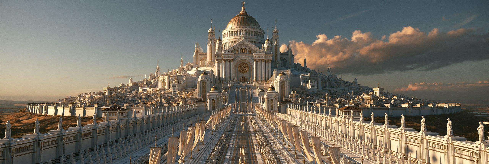
셀레스티아
교단의 심장. 신의 이름을 받은 유일한 도시. 참배로 양옆에 일정한 간격으로 늘어선 흰 형상들을 사람들은 성상(聖像)이라 부른다.

베네딕
성문에서 대성당까지 촛불 행렬이 끊긴 적이 없다. 간격이 흐트러진 적도 없다.

오르디네
도시만큼 커진 수도원. 모든 것이 기록되고, 기록은 전부 위로 올라간다.
메세타 평원 — 남부 곡창
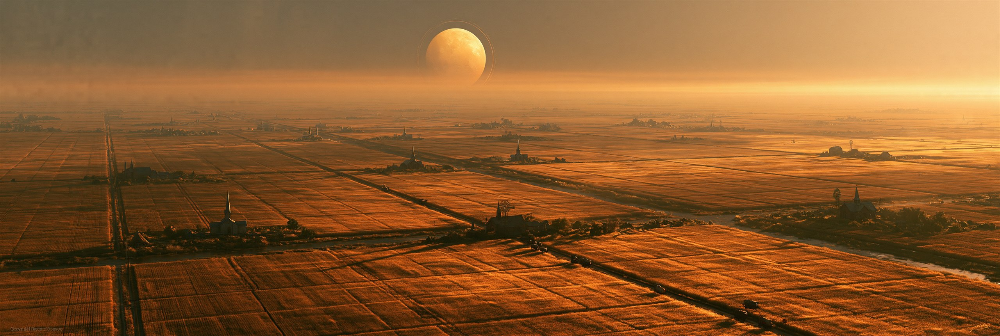
대륙의 빵바구니. 지평선까지 밀밭이 이어지고 그 사이를 곧게 뻗은 길과 수로가 가른다. 솔라리아 곡물의 절반 이상이 이 평원에서 나온다.
농부들이 대대로 물려주는 지혜가 하나 있다 — 휴경이 필요 없다. 같은 밭에 같은 밀을 백 년 심어도 지력이 떨어지지 않고, 어느 밭을 파도 흙이 같다. 다른 지방 사람이 이상하다고 하면 메세타 사람들은 웃으며 답한다. “여긴 원래 그래.”
수확은 전부 그라나의 대저울을 거친다. 교단 서기가 무게를 적고, 십일조를 떼고, 나머지가 수도로 간다. 그리고 이 평원 남쪽에 주인공의 고향 캄포 비에호가 있다. 게임의 첫 밀밭, 첫 예배당, 첫 아침이 여기서 시작된다.
지력이 회복되는 것이 아니라 조건이 유지되고 있다. 토양이 어디나 균질한 것은 같은 배지이기 때문이고, 흉작이 없는 것은 변수가 억제되고 있기 때문이다. 메세타는 배지 조건이 가장 안정적으로 유지되는 면(面)이며, 관측 대상의 기초 대사를 떠받치는 구역이다.

그라나
평원의 곡식은 전부 이곳의 저울을 거쳐 수도로 흐른다. 저울 옆에는 언제나 흰 로브의 서기가 서 있다.
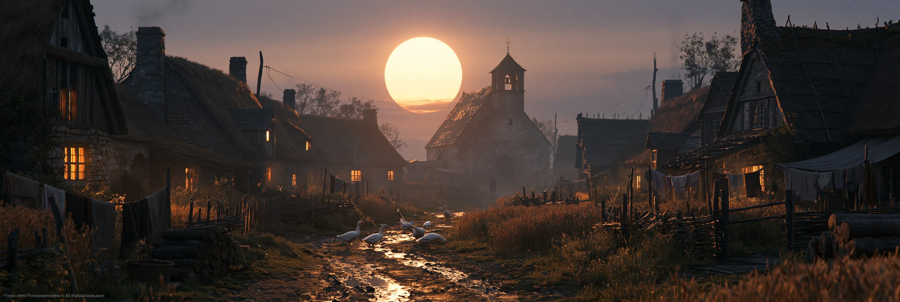
캄포 비에호
주인공의 고향. 밀밭 사이 낡은 예배당 — 모든 것이 여기서 시작된다.

몰리노
깃발이 늘어진 날에도 풍차는 돈다. 전부 같은 속도로, 같은 방향으로.
리토랄 — 서부 해안
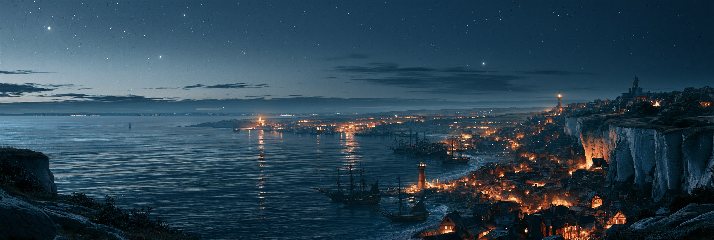
백악 절벽과 잔잔한 바다의 지방. 조수는 얕고 파도는 낮으며 폭풍이 기록에 없다. 어부들은 만 안쪽에서 그물을 던지고 상선은 해안을 따라 남북으로만 오간다. 외해로 나가는 배는 없다 — 나갈 이유가 없기 때문이라고들 한다. 아주 오래전 나갔다가 돌아오지 않은 배들의 이야기는 뱃노래로만 남았다.
학문도시 살마니카에는 솔라리아 유일의 대학이 있다. 신학·법학·천문학 세 학부 중 천문학은 가장 오래되고 가장 조용한 학부다 — 관측할 것이 변하지 않기 때문이다. 늙은 천문학자 하나가 수십 년치 성도(星圖)를 겹쳐 보고 평생을 한 문장에 걸었다. “별이 움직이지 않는다.” 학계는 그를 노망이라 불렀고, 교단은 이단이라 부르지 않았다 — 굳이 그럴 필요가 없었다. 아무도 믿지 않았으니까.
그리고 그는 옳다.
바다는 서쪽 「끝」까지 이어지고 「끝」은 접시의 격벽이다. 외해로 나간 배가 돌아오지 않은 것은 조난이 아니라 소멸이며, 그 뒤로 항해 관습이 만 안쪽으로 굳은 것은 우연이 아니다. 별이 움직이지 않는 것도 당연하다 — 그것은 천체가 아니라 뚜껑 안쪽에 고정된 표지다.
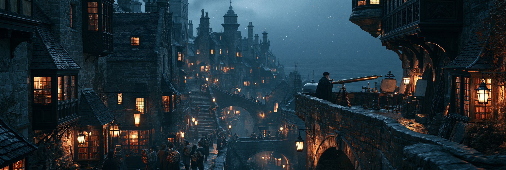
살마니카
계단길 꼭대기의 천문대. 수십 년치 성도가 전부 똑같다.

포르토 벨라
만 안쪽은 북적인다. 방파제 너머로 나가는 배는 없다.

아술
뱃머리마다 별자리를 그린다 — 평생 고칠 일 없는 지도다.
페로 — 동부 산맥

동부 산맥의 광산과 대장간. 철·구리·은이 나고 수차와 풀무와 도르래가 있으며, 솔라리아에서 가장 정교한 도구가 여기서 만들어진다. 다른 지방이 손으로 하는 일을 페로는 기계로 한다.
그래서 페로는 가장 발달한 지방이자 가장 감시받는 지방이다. 흰 로브의 형상들이 공방 골목마다 일정한 간격으로 서 있고, 새 기계에는 교단의 인가가 필요하며, 인가받지 못한 설계도는 조용히 사라진다. 장인들은 이유를 묻지 않는 법을 배웠다.
맑은 날 봉우리 위를 보면 하늘을 가로지르는 가느다란 금선이 보인다. 「하늘의 부름」의 한계선이며 육안으로 보이는 곳은 대륙에서 여기뿐이다. 새들조차 그 위로는 날지 않는다. 고산마을 알타 비아는 그 선 바로 아래에 있고, 그곳의 종탑은 일부러 낮게 지었다.
금선은 상부 격벽이며 넘으려 한 것은 고도에서 소멸한다. 감시가 촘촘한 이유는 기술 자체가 아니라 인과율 제1조 때문이다 — 사람의 손을 떠나 스스로 판단하는 기계는 「자율」, 곧 역리다. 페로는 그 선을 넘을 가능성이 가장 높은 지방이고 그래서 배치 우선순위가 높다. 미네르바의 봉인된 갱도가 무엇에 닿았는지는 봉인한 쪽만 안다.

포르지아
가장 발달한 도시이자 가장 감시받는 도시. 골목마다 일정한 간격으로 흰 로브가 서 있다.
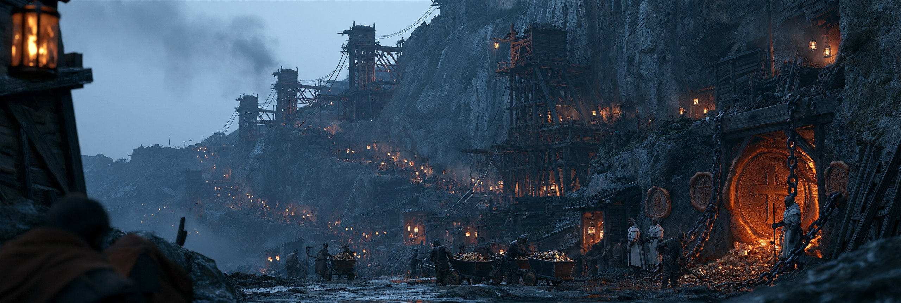
미네르바
가장 깊은 갱도 하나는 사슬과 봉인으로 잠겨 있다. 광부들은 그쪽을 보지 않는다.
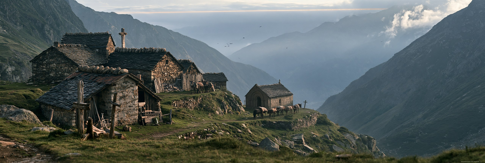
알타 비아
세계에서 가장 높은 마을. 종탑은 일부러 낮게 지었다 — 하늘에 닿지 않도록.
마르카 변경백령 — 북부 국경

북쪽 국경. 초록이 잿빛으로 죽어가는 땅을 따라 봉화와 요새가 이어지고 그 너머는 킨네리아 — 재의 회랑이다. 변경백은 형식상 성좌의 인가를 받지만 실제로는 살아남아 지킨 자가 그 자리에 앉는다. 성역에서 가장 멀고, 성역의 방식이 가장 안 통하는 땅이다.
병사들은 죽음을 자주 본다. 그래서 기도도 자주 한다. 그런데 아퀼라 성벽의 사당에 놓인 목각 천사들 중 절반은 경전에 없는 이름이다. 로카 그리지아의 바위 동굴에는 벽을 가득 채운 작은 새김들이 있고, 노인들은 촛불 아래에서 아이들에게 그 이름을 가르친다. 교단 사제가 오면 아무도 그 동굴 이야기를 하지 않는다.
발굴꾼들이 킨네리아로 넘어가는 통로도 여기다. 유적에서 나온 물건은 울티마의 뒷골목에서 거래되고, 반쯤 이단이며, 반쯤 묵인된다.
경전에 없는 이름들은 지어낸 것이 아니라 실재했던 천사들이다. 인과율 제3조 — 기재는 상쇄될 수 있으나 말소될 수 없다. 경전에서 지운다 해도 세계가 원본이므로 흔적은 남고, 남은 흔적은 감시가 가장 성긴 곳에 고인다. 진실이 변방에 있는 것은 정서가 아니라 물리다.

아퀼라 요새
성벽에 파인 병사들의 사당 — 경전에 없는 천사들의 목각이 놓여 있다.
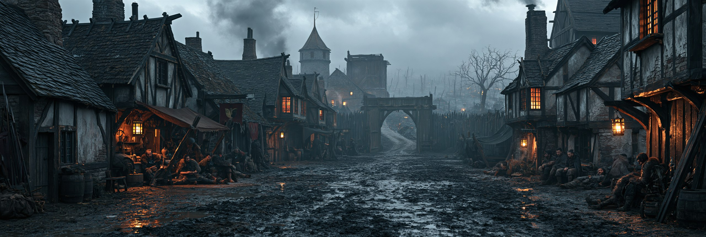
울티마
이름 그대로 「마지막」. 북쪽으로 난 창은 전부 닫혀 있다.
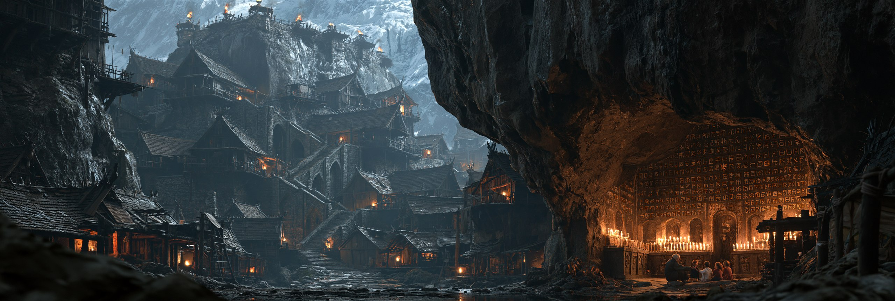
로카 그리지아
바위 밑 사당 동굴, 벽을 가득 채운 작은 새김들 — 교단이 지운 이름들이다.
피니스 절벽 — 남단
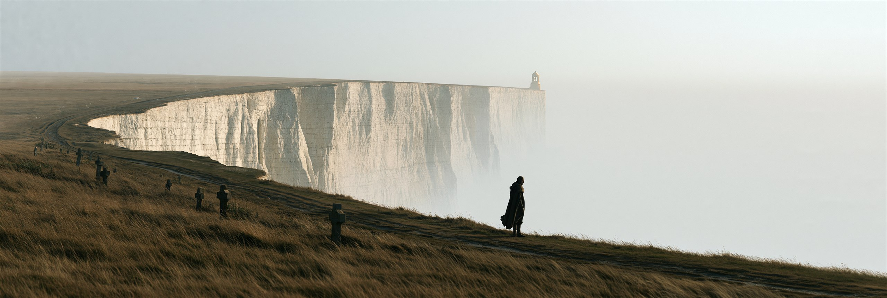
남쪽 끝. 백악 절벽이 지평선 이 끝에서 저 끝까지 이어지고, 그 너머에는 바다도 하늘도 없다 — 창백하게 빛나는 무(無)가 벽처럼 서 있을 뿐이다. 사람들은 그것을 「끝」이라 부르고, 교단은 신이 세계를 감싸 안은 품이라 가르친다.
절벽 위 사일렌티움 수도원의 수사들은 그 가르침을 받아들이되 한 걸음 더 갔다. 품이라면 두께가 있을 것이고, 두께가 있다면 잴 수 있을 것이다. 그들은 추를 내리고, 돌을 던지고, 소리가 되돌아오는 시간을 쟀다. 기록은 남지 않았다 — 서고 문에 이단 봉인이 박혔고 수사들은 흩어졌다.
남은 마을 사람들은 묻지 않는 법을 익혔다. 피니스의 골목은 어느 것도 절벽을 향하지 않고, 남쪽 벽에는 창을 내지 않으며, 예배당 문은 안쪽을 향한다. 등을 돌리는 것이 이 마을의 예의다.
「끝」은 품이 아니라 접시의 격벽이다. 넘으려 한 자가 소멸하는 것은 벌이 아니라 구조다. 사일렌티움의 수사들이 이단이 된 것은 틀렸기 때문이 아니라 — 맞는 방향으로 재기 시작했기 때문이다.
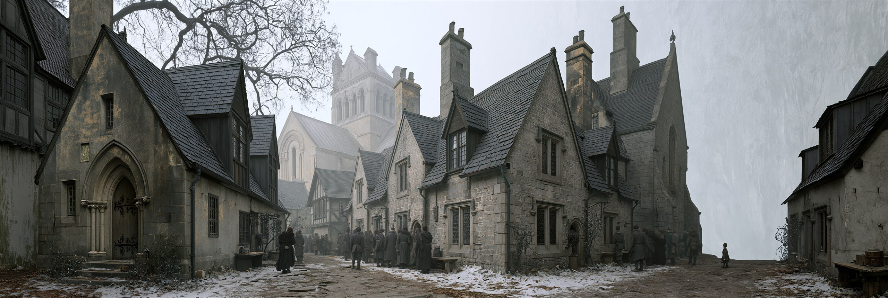
피니스
어느 골목도 끝을 향해 나 있지 않다. 등을 돌리고 사는 법을 익힌 마을이다.
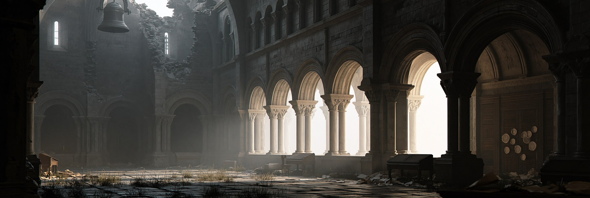
사일렌티움 수도원
「끝」을 물었던 수사들의 폐허. 서고 문에는 아직 봉인이 박혀 있다.
여섯 지방은 서로 다른 것을 기른다.
그러나 같은 조건 아래에서 자란다.